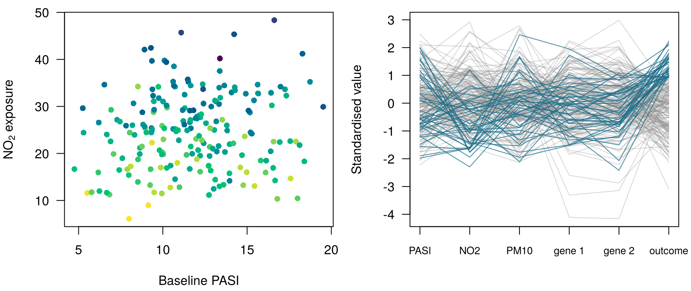
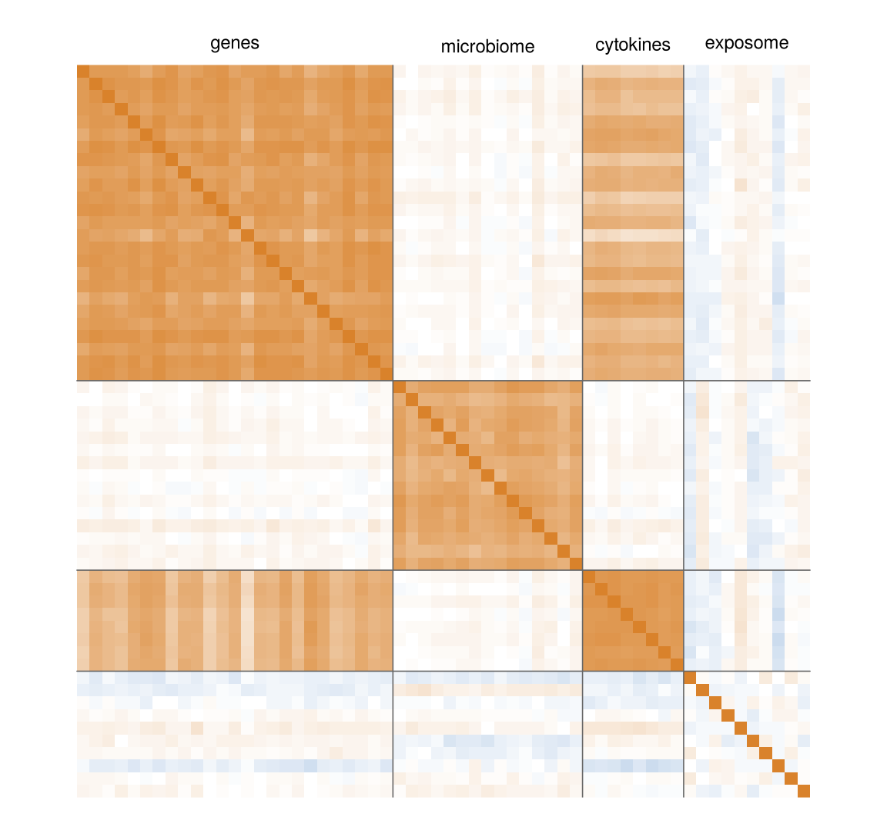
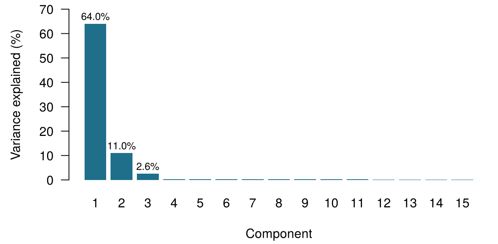
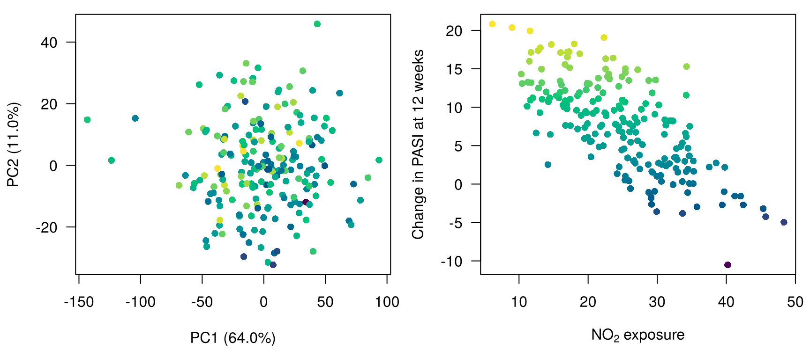
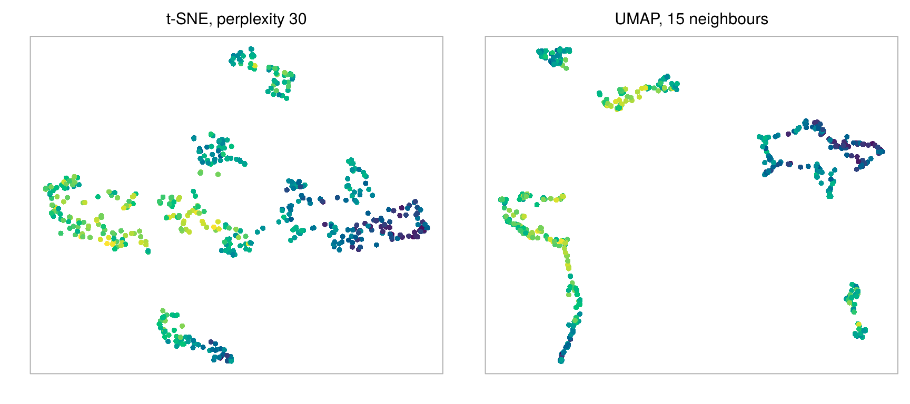
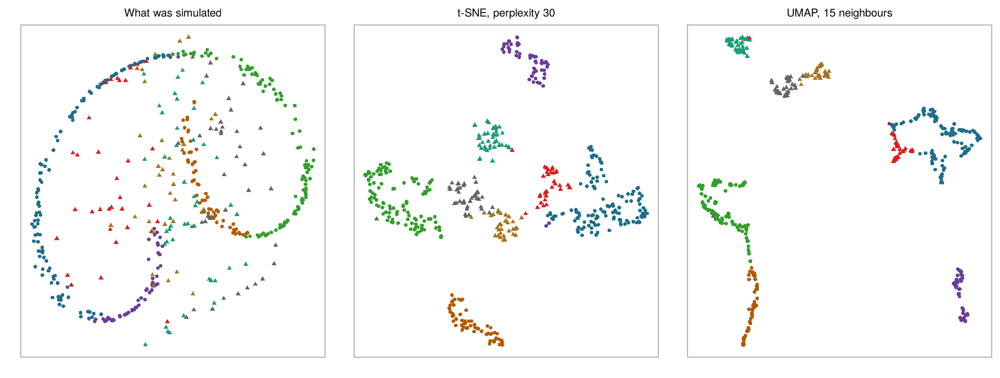

10 High-dimensional data and dimension reduction
Four questions to warm up. Take your best guess; the chapter explains each one.
| Question | Your answer |
|---|---|
| A table has 200 patients (rows) and 1 850 measurements (columns). In how many dimensions does each patient live? | |
| Two patients sit at (1, 1) and (4, 5) on a plot. What is the straight-line distance between them? | |
| Creatinine is re-recorded in µmol/L instead of mg/dL (every value multiplied by 88.4). The straight-line distance between two patients described by creatinine and age… | |
| A method that replaces many measurements by a few new summary variables, without looking at any outcome, is an example of… |
How to use this chapter
Starting here?
This chapter borrows a few ideas from earlier chapters. In one line each:
- Instances and features. Each row of a dataset is an instance (a patient), each column a feature; there are \(n\) instances and \(p\) features, and \(\mathbf{x}_i\) collects the features of instance \(i\) (Definition 1.7).
- Unsupervised learning looks for structure in the features without using an outcome (Section 1.6.2). Everything in this chapter is unsupervised; outcomes appear only as colours laid over the results afterwards.
- From Chapter 3. \(k\)-nearest neighbours predicts from the most similar past patients, “similar” meaning close in Euclidean distance on standardised features (each feature minus its mean, divided by its standard deviation). Means and standard deviations used in a prediction pipeline must come from the training data only, or the scaling leaks.
- From Chapter 4. Collinearity (strongly related predictors) makes regression coefficients unstable; ridge and lasso tame models with more predictors than patients. In ONCO-1, genes 08, 14 and 19 are leaky copies of the outcome and are left out unless we are studying leakage.
- From Chapter 2. Entropy measures uncertainty (surprise), in bits.
| Example | Who or what | Outcome | Faces you will meet |
|---|---|---|---|
| 1 Ward 7 ICU | 1 250 ICU patients in 4 hospitals | change in creatinine over 48 h (acute kidney injury if ≥ 0.3 mg/dL) | Aoife (71, sepsis, borderline risk), Tomás (54, low risk), Priya (38, high risk); Dr Emma Walsh; Seán, the pharmacist |
| 2 ONCO-1 trial | 1 000 patients randomised to chemotherapy or not | tumour shrinkage (%) | patients #0042 and #0917 |
| 3 HomeBeat | 500 people wearing a smartwatch at home | stress score, deterioration event | Lena |
| 4 CellWorks | 420 production batches of a cell therapy | potency score | batch CW-118 |
All four datasets are simulated and can be downloaded from the data appendix. The full introduction is in Section 1.1.
This chapter follows patients into spaces with thousands of axes and brings them back to a page. It has ten sections and a Lab, eight quick checks, three “Try it” widgets, a matching challenge and three coding missions in R and Python. Allow about 100 minutes. You need no linear algebra beyond the idea of a weighted sum; every formula is followed by a sentence that says the same thing in words.
Notation at a glance (for lookup only)
| Symbol | Meaning | Section |
|---|---|---|
| \(p\), \(n\) | number of features (dimensions), number of instances | Section 10.1 |
| \(d(\mathbf{x}_i, \mathbf{x}_{i'})\) | distance between instances \(i\) and \(i'\) | Section 10.2 |
| \(\mathbf{S}\) | covariance matrix of the features (correlation matrix after standardising) | Section 10.2 |
| \(\mathbf{u}_m\) | direction (unit vector of coefficients) of principal component \(m\) | Section 10.5 |
| \(z_{im}\), \(\mathbf{z}_i\) | score of instance \(i\) on component \(m\); its low-dimensional representation | Section 10.5 |
| \(s_m^2\) | variance of the scores on component \(m\) (an eigenvalue of \(\mathbf{S}\)) | Section 10.5 |
| \(q\) | number of components or map dimensions kept | Section 10.5 |
| Perp | perplexity of t-SNE, the effective number of neighbours | Section 10.7 |
The full list is on the notation page.
10.1 What is a dimension?
Start with the dermatology cohort, which we call Dermato-ATT. Psoriasis is a chronic inflammatory skin disease in which skin cells multiply too fast and the immune system, in particular the interleukin-17 and interleukin-23 pathway, is over-active; drugs that block IL-17 are among the most effective treatments (Griffiths et al. 2021). Severity is scored with the Psoriasis Area and Severity Index (PASI), from 0 (clear) to 72 (Fredriksson and Pettersson 1978). Before the first injection, the unit recorded for each of 200 patients the blocks in Table 10.1; the outcome is the change in PASI after 12 weeks of treatment. Like every dataset in this book, the cohort is simulated: the gene and microbe names are labels, not real genes, and we will look inside the simulator in Section 10.5.4.
data/dermato.csv) keeps every clinical, cytokine and exposome column, the first 100 genes and the first 50 microbiome features.
| Block | Columns | Examples | What it describes |
|---|---|---|---|
| Clinical | 2 | PASI_baseline, DLQI |
severity and quality of life at baseline |
| Cytokines | 18 | cytokine_1 … cytokine_18 |
inflammatory proteins in blood |
| Exposome | 30 | NO2, PM10, UV_index, temperature, humidity, expo_6 … |
environment where the patient lives |
| Genes | 1 500 | gene_1 … gene_1500 |
expression in lesional skin |
| Microbiome | 300 | ASV_1 … ASV_300 |
abundance of skin bacteria (amplicon sequence variants) |
| Total | 1 850 | plus Outcome_PASI12, the change in PASI at 12 weeks |
Each column is an axis. A patient described by two measurements is a point on a sheet of paper; by three, a point in a room. A Dermato-ATT patient is a point in a space with 1 850 axes.
Definition 10.1 (Dimension) The dimension of a dataset is its number of features \(p\): each feature is one axis, and each instance is a point \(\mathbf{x}_i = (x_{i1}, \dots, x_{ip})\) in a \(p\)-dimensional space. A dataset is high-dimensional when \(p\) is large relative to the number of instances \(n\); when \(p\) is much larger than \(n\) we write \(p \gg n\). Dermato-ATT has \(n = 200\) and \(p = 1\,850\); the full ONCO-1 trial has 2 000 genes.
We can look at a few axes at a time. Figure 10.1 (left) places every patient by baseline PASI and nitrogen dioxide (NO2) exposure and colours them by their 12-week change in PASI. No pattern jumps out: patients who improved a lot and patients who barely changed are scattered everywhere. Adding a third axis (a gene) gives a cloud you could rotate on screen, and it is still a diffuse cloud. The data contain strong relationships by construction, but they are not visible through two or three coordinates.
Graphics can stretch a little further. In a parallel-coordinate plot (Figure 10.1, right) each variable becomes a vertical axis and each patient a line that crosses them all; bundles of lines that travel together reveal shared profiles (Inselberg 1985). Here the highlighted patients, those who improved most, tend to cross the NO2 axis low: a first hint, which we will need later. Conditioning plots (trellis or lattice displays) draw the same scatter plot in several panels, one for each band of a third variable, so that you can see how a relationship changes across groups (Cleveland 1993; Sarkar 2008). Both stop working long before 1 850 variables. To see the whole cloud we need either a way of measuring how far apart patients are in all dimensions at once, or a way of reducing the dimensions to a few that matter. This chapter does both, in that order.
10.2 How far apart are two patients? Distances
Every method in this chapter, and the \(k\)-nearest neighbours of Chapter 3, begins with the same question: how far apart are two patients?
10.2.1 Euclidean distance, from two dimensions to \(p\)
On a sheet of paper, the distance between patients A and B is the length of the straight line that joins them. If A is at \((x_{A1}, x_{A2})\) and B at \((x_{B1}, x_{B2})\), Pythagoras gives
\[ d(A, B) = \sqrt{(x_{B1} - x_{A1})^2 + (x_{B2} - x_{A2})^2} : \]
the horizontal difference squared, plus the vertical difference squared, square-rooted (Figure 10.2, left). In three dimensions a third squared difference joins the sum. Nothing stops us from continuing: with \(p\) features, the Euclidean distance between instances \(i\) and \(i'\) is
\[ d(\mathbf{x}_i, \mathbf{x}_{i'}) = \sqrt{\sum_{j=1}^{p} (x_{ij} - x_{i'j})^2} , \qquad(10.1)\]
the same recipe over \(p\) coordinates: one squared difference per feature, added up, then the square root.
10.2.2 Other distances
Euclidean distance is one choice among several, and each choice encodes a different idea of what “similar” means (Hastie, Tibshirani, and Friedman 2009, ch. 14).
- Manhattan distance adds the absolute differences instead of squaring them, \(d_{\text{Man}}(\mathbf{x}_i, \mathbf{x}_{i'}) = \sum_j |x_{ij} - x_{i'j}|\): the distance a taxi drives along a grid of streets (Figure 10.2, middle). Because differences are not squared, one large difference weighs less, and for random data the contrast between near and far points fades more slowly than with Euclidean distance as dimensions are added (Aggarwal, Hinneburg, and Keim 2001).
- Cosine distance looks only at the direction of the two profiles, not at their length: \(d_{\cos}(\mathbf{x}_i, \mathbf{x}_{i'}) = 1 - \dfrac{\sum_j x_{ij}x_{i'j}}{\sqrt{\sum_j x_{ij}^2}\,\sqrt{\sum_j x_{i'j}^2}}\). The fraction is the cosine of the angle between the two arrows of Figure 10.2 (right): 1 when they point the same way, so the distance is 0. It suits profiles in which the proportions matter and the total does not: two skin swabs with the same mix of bacteria, one sequenced twice as deeply as the other, have cosine distance 0. Chapter 15 uses exactly this idea to compare documents of different lengths.
- Mahalanobis distance takes the correlations between features into account (Mahalanobis 1936): \(d_{\text{Mah}}(\mathbf{x}_i, \mathbf{x}_{i'}) = \sqrt{(\mathbf{x}_i - \mathbf{x}_{i'})^\top \mathbf{S}^{-1} (\mathbf{x}_i - \mathbf{x}_{i'})}\), where \(\mathbf{S}\) is the covariance matrix of the features. Two cytokines that rise and fall together (in Dermato-ATT,
cytokine_1andcytokine_2have a correlation of 0.81) carry largely the same information. A patient one standard deviation above average on both is unremarkable: Mahalanobis distance 1.05 from the average patient. A patient one standard deviation above on one and one below on the other has an unusual combination: distance 3.22, although both patients are exactly the same standardised Euclidean distance (\(\sqrt 2\)) from the average. The catch is that \(\mathbf{S}\) must be estimated and inverted, which is impossible when \(p \ge n\): with 1 850 features and 200 patients the matrix has no inverse.
Definition 10.2 (Distance) A distance \(d(\mathbf{x}_i, \mathbf{x}_{i'})\) is a rule that turns two feature vectors into a non-negative number, zero for identical instances and larger for less similar ones. The Euclidean distance (Equation 10.1) sums squared differences; the Manhattan distance sums absolute differences; the cosine distance measures the angle between profiles and ignores their length; the Mahalanobis distance rescales the space by the inverse covariance matrix so that correlated features are not counted twice (Mahalanobis 1936). Choosing a distance is choosing what “similar” means (Hastie, Tibshirani, and Friedman 2009, ch. 14; Kaufman and Rousseeuw 1990).
Two microbiome profiles have exactly the same proportions of every bacterium, but sample B was sequenced to twice the depth of sample A, so every count in B is double the count in A. Which statement is true?
10.2.3 Units matter: standardise first
Take three hypothetical patients described by baseline PASI (points), NO2 exposure (µg/m³) and gene_1 (expression units), shown in Table 10.2.
| Patient | PASI | NO2 | gene_1 | to A (raw) | to B (raw) | to A (standardised) | to B (standardised) | |
|---|---|---|---|---|---|---|---|---|
| A | A | 10 | 20 | 0.1 | 0.0 | 35.1 | 0.00 | 4.42 |
| B | B | 12 | 55 | 0.9 | 35.1 | 0.0 | 4.42 | 0.00 |
| C | C | 18 | 45 | 0.5 | 26.3 | 11.7 | 4.02 | 2.30 |
On the raw scale NO2 is measured in tens of units and gene_1 in fractions of a unit, so NO2 decides almost everything: of the squared distance between A and C, 91% comes from NO2 and only 9% from PASI, although A and C differ by eight PASI points, a clinically large gap. After each variable is divided by its standard deviation in the cohort (PASI 3.1, NO2 8.1, gene_1 1.16), PASI’s share rises to 40%. Nothing about the patients changed; only the units did. This is the scaling lesson of Chapter 3, now with many variables of wildly different units, and it applies to every distance, to PCA and to every map in this chapter.
Definition 10.3 (Standardisation (scaling)) To standardise a feature, subtract its mean and divide by its standard deviation: \(x^{*}_{ij} = (x_{ij} - \bar x_j)/s_j\). Every standardised feature has mean 0 and standard deviation 1, so distances and principal components no longer depend on the units of measurement. In a prediction pipeline the means and standard deviations are computed on the training data only (Chapter 3); for a purely descriptive map of a cohort they come from the whole cohort.
Standardising is a choice, not a law. It gives every feature the same weight, which is right when units are arbitrary (NO2 against PASI) and can be wrong when all features share a unit and their spread is informative, or when many noisy features would be inflated to the same importance as a few strong ones (Jolliffe 2002, ch. 2). Make the choice deliberately, and report it.
You compute Euclidean distances between Dermato-ATT patients on the five named exposome variables (NO2, PM10, UV index, temperature, humidity) without standardising. Their standard deviations are about 8, 6, 1, 5 and 12. Which variable dominates the distances?
How far apart are two ONCO-1 patients? The 47 genes of ONCO-1 that are not leaky copies of the outcome are loaded as genes (one row per patient). Standardise every gene, then compute the Euclidean distance between the first two patients. Fill in the blank with the function that standardises.
The function has the same name as the idea: it scales the columns.
z <- scale(genes) # standardise every gene (column)The method is short for standard deviation: three letters.
z = (genes - genes.mean()) / genes.std() # standardise every gene (column)On the raw expression values the same two patients are a different distance apart, because genes with a large spread dominate. pandas and R both divide by the standard deviation computed with \(n-1\), so the two languages agree to the last digit.
10.3 The curse of dimensionality
The formula for distance generalises to any \(p\). Our intuition does not. The curse of dimensionality, a phrase coined by Bellman (1961), gathers several ways in which high-dimensional spaces behave unlike the two- and three-dimensional ones we can picture.
Definition 10.4 (Curse of dimensionality) The curse of dimensionality is the collection of problems that appear as the number of dimensions grows: the data become sparse (any fixed number of points covers a vanishing fraction of the space), distances concentrate (the nearest and the farthest neighbours of a point become almost equally far away), and methods that rely on local neighbourhoods, such as \(k\)NN, need exponentially more data to keep the same accuracy (Bellman 1961; Hastie, Tibshirani, and Friedman 2009, sec. 2.5).
Sparsity. Suppose patients are spread evenly over a unit cube and you want a “neighbourhood” that contains 10% of them. In one dimension an interval of length 0.10 is enough. In ten dimensions the sub-cube needs edges of length 0.79, in a hundred dimensions 0.977 (Hastie, Tibshirani, and Friedman 2009, sec. 2.5). A “neighbourhood” that spans almost the whole range of every variable is not local any more: your nearest neighbours are not near.
Concentration. Simulate 200 points whose every coordinate is pure random noise and compare the closest pair with the most distant pair (Table 10.3). In two dimensions the closest pair almost coincide: their distance is 0.00063 of the largest distance. In a thousand dimensions the closest pair is already 84% as far apart as the farthest pair: everyone is roughly equally far from everyone (Beyer et al. 1999).
| Dimension p | Nearest pair | Farthest pair | Ratio nearest / farthest |
|---|---|---|---|
| 2 | 0.00 | 5.60 | 0.001 |
| 10 | 1.43 | 9.07 | 0.157 |
| 100 | 10.33 | 17.87 | 0.578 |
| 1000 | 40.87 | 48.54 | 0.842 |
Watch distances concentrate. A hundred simulated patients are described by \(p\) features. The histogram shows all 4 950 pairwise distances, each divided by their average, so that you see their spread rather than their size; the lower chart shows the ratio of the nearest to the farthest distance for every \(p\). Switch between features that are independent noise and features driven by two hidden factors plus noise, like the gene block of Dermato-ATT. Target: with independent noise, find the smallest \(p\) at which the nearest pair is at least half as far apart as the farthest pair.
The second kind of data teaches the more hopeful lesson. When features are driven by a few hidden factors, adding more of them adds the same information again, and the contrast between near and far survives. Real biology usually looks more like this than like pure noise. In Dermato-ATT, with all 1 850 standardised measurements, the nearest pair of patients is 12% as far apart as the farthest pair; for 200 points of pure noise in the same number of dimensions it would be 88%. The danger lies in the features that carry no shared signal: each one adds a little noise to every distance, and enough of them drown the signal. That is why the ONCO-1 team’s request is harder than it looks. Among 2 000 genes, most of which have nothing to do with how a tumour responds, the “most similar patients” to #0042 are chosen largely by noise; Chapter 3’s \(k\)NN, so effective with two features, can degrade badly when it is given thousands.
Collinearity. The last face of the curse is the opposite of noise: redundancy.
A team proposes to predict tumour response in ONCO-1 with \(k\)-nearest neighbours on all 2 000 genes, standardised. What is the main risk?
10.4 Correlation and redundancy
Biological measurements come in teams. Genes switched on by the same transcription programme rise and fall together; bacteria that share a niche flourish together; pollutants from the same traffic move together. Figure 10.3 shows the correlations among a sample of Dermato-ATT variables.

Definition 10.5 (Correlation and collinearity) The correlation between two features measures, from −1 to 1, how closely they follow a straight line together. A set of features is collinear when one of them can be written, exactly or nearly, as a weighted sum of others. Collinear features carry overlapping information: the data cloud occupies a space of fewer dimensions than the number of columns suggests. Its intrinsic dimension is the number of independent directions it really uses.
Collinearity is a nuisance and a gift. It is a nuisance because, as Chapter 4 showed, regression coefficients of collinear predictors become unstable, and because distances count redundant information many times over: 1 500 genes moving together weigh 1 500 times in a Euclidean distance. It is a gift because it tells us that the 1 850 columns are not 1 850 separate pieces of information. If a handful of directions carry most of the variation, we can describe each patient by their position along those directions instead. Finding them is the job of principal component analysis.
10.5 Principal component analysis
10.5.1 PCA as a rotation
Look at the cloud of patients in the widget below: each point is a patient, placed by two standardised genes. The cloud is a tilted ellipse. Along the original axes it spreads moderately in both directions; along its long diagonal it spreads a lot; across the diagonal, very little. If you had to describe each patient with one number instead of two, the best single number would be the patient’s position along the long diagonal. That is the idea of principal component analysis (Pearson 1901; Hotelling 1933).
Find the first principal component by hand. The line through the centre is a candidate new axis. Each patient is projected onto it (the small marks on the line), and the variance captured is the variance of those projected positions. Turn the axis and watch the variance change. The total variance of two standardised genes is 2. Target: capture at least 99% of the largest variance that any single axis can capture.
You have just done PCA in two dimensions: you rotated the coordinate system so that the first axis points along the direction of greatest spread. The second axis is forced to be at right angles to the first, and here it carries what is left. Nothing about the patients changed; we only looked at them from a better angle, much as the cylinder of Chapter 1 looked like an ellipse, a triangle or an arch depending on the point of view (Figure 1.1).
10.5.2 The algorithm
With \(p\) standardised features, the same idea runs in \(p\) dimensions. A direction is a list of \(p\) coefficients \(\mathbf{u} = (u_1, \dots, u_p)\) with \(\sum_j u_j^2 = 1\), and the position of patient \(i\) along it is a weighted sum of the patient’s features:
\[ z_{i} = u_1 x_{i1} + u_2 x_{i2} + \dots + u_p x_{ip} . \qquad(10.2)\]
PCA chooses the first direction \(\mathbf{u}_1\) to make the variance of these positions as large as possible; the second, \(\mathbf{u}_2\), to make the remaining variance as large as possible while being at right angles to \(\mathbf{u}_1\); and so on, up to \(p\) directions (or \(n - 1\), whichever is smaller). Linear algebra solves this in one step: the directions are the eigenvectors of the correlation matrix \(\mathbf{S}\) of the standardised features, and the variance along each one, \(s_m^2\), is the corresponding eigenvalue (Jolliffe 2002; Jolliffe and Cadima 2016). You do not need to compute eigenvectors by hand; you do need to know what comes out.
Definition 10.6 (Principal component analysis (PCA)) Principal component analysis replaces \(p\) correlated features by new variables, the principal components, that are weighted sums of the originals (Equation 10.2), uncorrelated with one another and ordered by the variance they carry: the first has the largest possible variance, each next one the largest variance at right angles to all the previous ones. Keeping the first \(q\) components gives the best \(q\)-dimensional linear summary of the data, in the sense of losing the least variance. PCA is unsupervised: it never sees the outcome.
Definition 10.7 (Scores and loadings) The score \(z_{im}\) is the position of instance \(i\) along component \(m\); the scores of the first \(q\) components, \(\mathbf{z}_i = (z_{i1}, \dots, z_{iq})\), are the instance’s coordinates on the PCA map. The coefficients \(u_{jm}\) say how much feature \(j\) weighs in component \(m\) (R’s prcomp calls them rotation). For standardised data the loading of feature \(j\) on component \(m\) is usually reported as the correlation between the feature and the component, \(u_{jm} s_m\); this is what FactoMineR calls the variable’s coordinate. A large loading, positive or negative, means the feature moves strongly with the component.
Definition 10.8 (Explained variance) The proportion of variance explained by component \(m\) is \(s_m^2 / \sum_k s_k^2\). With \(p\) standardised features the total variance is \(p\), so it equals \(s_m^2 / p\). A scree plot shows these proportions in order; the point where the curve flattens (the “elbow”) suggests how many components carry structure rather than noise (Cattell 1966).
After a PCA of Dermato-ATT, patient P17 has a score of +40 on the first component. What does that number describe?
10.5.3 PCA of the Dermato-ATT cohort
The full cohort (200 patients, 1 850 standardised variables) was analysed with the PCA() function of the R package FactoMineR (Lê, Josse, and Husson 2008); the code is in scripts/precompute/ch10_pca.R and, on the browser copy of the data, in the Lab. Two lines do the work:
library(FactoMineR)
res <- PCA(X, scale.unit = TRUE, ncp = 10, graph = FALSE) # X: the 1 850 columns, no outcomescale.unit = TRUE standardises every variable first; the outcome and the patient identifier are left out because PCA is unsupervised. The result holds the eigenvalues (res$eig), and for the variables their coordinates (loadings), squared cosines and contributions (res$var$coord, res$var$cos2, res$var$contrib), with the same three for the patients in res$ind.

The scree plot (Figure 10.4) has a sharp elbow. The first component carries 64.0% of the total variance, the second 11.0%, the third 2.6%; together the first three carry 77.6%, and every later component carries less than 0.4%. In other words, 1 850 columns behave as if they were about three, plus noise.
10.5.3.1 Which variables build each component? Contributions done right
FactoMineR reports, for each variable and component, a contribution: the percentage of the component’s variance that comes from that variable. For standardised data it equals \(100 \times u_{jm}^2\), so it is always positive and, for every component, the contributions of all variables add up to 100%. With 1 850 variables, the average contribution is \(100 / 1850 = 0.054\%\). Keep that baseline in mind when you read the numbers in Table 10.4.
| Component | Variable | Block | Loading | cos² | Contribution (%) | Block’s share of the component (%) |
|---|---|---|---|---|---|---|
| PC1 | gene_538 | genes | 0.961 | 0.923 | 0.078 | 99.2 |
| PC1 | gene_364 | genes | 0.961 | 0.923 | 0.078 | |
| PC1 | gene_862 | genes | 0.959 | 0.919 | 0.078 | |
| PC2 | ASV_10 | microbiome | 0.896 | 0.803 | 0.394 | 99.0 |
| PC2 | ASV_235 | microbiome | 0.896 | 0.803 | 0.394 | |
| PC2 | ASV_71 | microbiome | 0.891 | 0.794 | 0.390 | |
| PC3 | cytokine_5 | cytokines | 0.631 | 0.399 | 0.831 | 13.3 |
| PC3 | cytokine_9 | cytokines | 0.627 | 0.393 | 0.819 | |
| PC3 | cytokine_6 | cytokines | 0.613 | 0.376 | 0.784 |
The top gene on the first component contributes 0.078%: barely above the average of 0.054%. That is not a weakness; it is the signature of a component built from a whole block. Each of the 1 500 genes contributes a little, most of them with loadings between 0.80 and 0.94, and together the genes make up 99.2% of the first component. The second component is the microbiome block (99.0% of it, top contribution 0.394%: fewer variables share the load, so each takes a larger slice). The third is more mixed: the 18 cytokines together make up 13.3% of it, with individual contributions near 0.83%, and the genes most of the rest, some with positive and some with negative loadings.
Three quantities are easily confused, and the confusion leads to wrong biology:
- the loading says how strongly a variable moves with the component (and in which direction);
- the cos², the loading squared, says how much of that variable the component captures: about 92% of the top gene’s variance is on the first component;
- the contribution says how much of the component that variable makes up. A single variable can only contribute a large percentage if few variables share the component.
A contribution of several percent from one gene in a component built from 1 500 similar genes is arithmetically impossible: ten genes at that level would make up most of the axis on their own. Always check that contributions add up to 100, and compare them with \(100/p\).
![Two unit circles with axes PC1 and PC2. Left: a dense band of 1 500 gene points near the right edge, at about 0.9 on PC1; a band of 300 microbiome points near the top, at about 0.8 on PC2; cytokine points at about 0.65 on PC1; exposome points packed near the centre. Right: arrows for five genes point right almost to the circle, arrows for five microbiome features point up almost to the circle, arrows for five cytokines point right but end about two thirds of the way out, and the arrows for NO2 and humidity are tiny, ending near the centre.](ch10_files/figure-html/fig-ch10-circle-1.png)
A correlation circle (Figure 10.5) draws each variable as an arrow whose coordinates are its loadings on two components. Arrows that point the same way belong to correlated variables; arrows at right angles to uncorrelated ones; an arrow that reaches the circle is almost entirely captured by the two components, and a short arrow lives mostly in other dimensions. With 1 850 variables the full circle is unreadable, so draw a reduced one with the variables you want to discuss. Notice the two short arrows near the centre: NO2 and humidity are almost invisible on this map. Remember NO2.
10.5.3.2 Where do the patients sit?

The scores place every patient on the map (Figure 10.6, left). Patients close together have similar values on the dominant directions of variation; with three components carrying 77.6% of the variance, distances on the map approximate distances in the full space reasonably well, though not perfectly. Colouring by the outcome reveals almost nothing: the first three components together explain only 13% of the variance of the 12-week change in PASI, the first ten 26%. Yet a single variable, NO2, explains 52% of it on its own (Figure 10.6, right). The variable that matters most for the outcome is one of the two short arrows near the centre of the circle; its largest loading among the first ten components is 0.40, on component 9.
10.5.4 What the simulation really contains
Because the data are simulated, we can open the box. The simulator (scripts/simulate/sim_dermato_att.R) draws four hidden factors for each patient, \(G_1\), \(G_2\), \(M_1\) and \(M_2\), all independent standard normal variables, and builds every block from them:
\[ \begin{aligned} \text{gene}_j &= a_j G_1 + b_j G_2 + \text{noise}, &\quad a_j, b_j &\sim \mathcal{N}(0.7,\ 0.2^2) \text{ (the same distribution)} \\ \text{ASV}_j &= c_j M_1 + d_j M_2 + \text{noise}, &\quad c_j, d_j &\sim \mathcal{N}(0.5,\ 0.1^2) \\ \text{cytokine}_j &= 2\,G_1 + \text{noise} \\ \text{exposome} &= \text{independent noise, on very different scales} \\ \text{Outcome} &= 20 - 2\,G_1 + 1.5\,M_1 - 0.5\,\text{NO}_2 + \text{noise} . \end{aligned} \]
The comments in the code call \(G_1\) an “IL-17/IL-23 inflammatory axis” and \(G_2\) a “barrier” signature, but nothing in the numbers makes them so: every gene mixes both factors with weights drawn from the same distribution, and no pathway, IL-17 or otherwise, is simulated. Table 10.5 shows how the components line up with the hidden factors.
| Component | G1 | G2 | M1 | M2 | Outcome | NO2 |
|---|---|---|---|---|---|---|
| PC1 | 0.75 | 0.74 | 0.05 | 0.07 | -0.17 | -0.12 |
| PC2 | -0.05 | 0.03 | 0.71 | 0.73 | 0.28 | -0.12 |
| PC3 | 0.66 | -0.67 | 0.01 | 0.02 | -0.17 | -0.05 |
| PC4 | -0.01 | 0.00 | -0.65 | 0.63 | -0.19 | 0.04 |
Read the table row by row and the components tell an honest story:
- PC1 is the sum of the two gene factors (\(G_1 + G_2\)), because every gene loads positively on both. It is not an inflammatory axis; it is “how much of the shared gene programme this patient expresses”.
- PC2 is the sum of the two microbiome factors.
- PC3 is the contrast \(G_1 - G_2\): the direction along which genes that lean towards \(G_1\) separate from genes that lean towards \(G_2\). The cytokines follow \(G_1\) alone, so this is the component on which they stand out. PC4 is the microbiome contrast.
- The outcome depends on \(G_1\), \(M_1\) and above all on NO2, an independent variable with a large spread that PCA treats as one standardised column among 1 850.
Three lessons follow, and they hold far beyond this dataset.
- Directions of large variance are not necessarily directions that matter. PCA summarises what varies most among the features. Whether that relates to the outcome is a separate question that PCA cannot answer. Using the first few components as predictors (principal components regression) can throw away exactly the signal you need (James et al. 2021, sec. 6.3); supervised methods such as the lasso of Chapter 4 look at the outcome when they choose.
- Components are mathematical objects; names are hypotheses. Calling a component “inflammation” is a claim to be tested against external knowledge, not a result of the PCA.
- Read the numbers before the story. Contributions add up to 100; loadings are correlations; a block of many similar variables produces a component with many small contributions.
In the Dermato-ATT PCA, a gene has a contribution of 0.078% to the first component. A colleague concludes: “Each gene is irrelevant to PC1.” Is that right?
The first three principal components of Dermato-ATT explain about 78% of the variance of the features but less than 15% of the variance of the outcome. What should you conclude?
Match each description to the PCA quantity it describes.
- Where patient P17 sits along the first component. Score
- The correlation between NO2 and the ninth component. Loading
- The amount of variance carried by the second component. Eigenvalue
- The share of
gene_538’s own variance that the first component captures. cos² - The percentage of the first component built from
gene_538; summed over all variables it gives 100. Contribution
10.5.5 Scaling, once more
What if we skip scale.unit = TRUE? Take the 30 exposome variables alone. Unstandardised, the first component explains 49% of their variance, and the variable with the largest coefficient is humidity: the component is simply “humidity”, because humidity has the largest standard deviation (12 percentage points) and the 25 expo_ variables have standard deviation 1. Standardised, the first component explains 6%. That is about what 30 unrelated variables give: with no structure each would carry \(1/30 \approx 3.3\%\), and with 200 patients chance alone lets the first component catch a little more. It is the truth: the exposome variables were simulated independently. An unscaled PCA would have announced a “humidity axis” discovered by the data; it was discovered by the units.
How many genes’ worth of information? Run a PCA on the 47 non-leaky ONCO-1 genes and report the proportion of variance explained by the first component. Remember to standardise.
scale. = TRUE standardises every gene before the components are computed.
pca <- prcomp(genes, scale. = TRUE)The standardised matrix is already stored in z.
pca = PCA().fit(z)The first two components together carry 70% of the variance of the 47 genes: the ONCO-1 simulator builds its gene expression from two hidden factors, and PCA finds them. Unscaled, the first component alone would claim 51%.
10.6 When straight lines are not enough
PCA looks at the data through flat sheets: its map is a projection onto the plane of greatest spread. If the patients lie on a curved surface, a projection squashes parts of it on top of each other, as a rolled-up carpet seen from above hides most of its pattern. For such data, nonlinear methods try to keep each patient next to its true neighbours instead of keeping straight-line distances.
To meet them we switch to the third request of the Monday morning. The Digital Trial dataset describes 500 participants of a decentralised trial with eleven features: four circulating cytokines (cytokine_1–cytokine_4), four summaries of wearable-sensor signals such as rest–activity rhythm and movement variability (wearable_1–wearable_4), three clinical assessments (clinical_1–clinical_3), and a treatment response, delta_score, with a binary responder label (above or below the median response). The dataset is simulated, and its simulator hides a secret that we keep for Section 10.9. All maps below use the eleven features, standardised; delta_score and responder are left out and used only as colours.
A PCA of the eleven features spreads the variance over several components: the first two carry 28% and 20%, the third still 12%. A two-dimensional PCA map shows only about half of the picture. You can see it in the widget at the end of the next section.
10.7 t-SNE: keeping neighbours together
t-distributed stochastic neighbour embedding (t-SNE) gives up on preserving distances in general and concentrates on one thing: who is close to whom (Maaten and Hinton 2008). It works in three steps.
- Neighbourhoods in the original space. For each participant \(i\), t-SNE turns distances into probabilities of being neighbours: participant \(i'\) is picked as a neighbour of \(i\) with probability \[ p_{i' \mid i} = \frac{\exp\!\big(-d(\mathbf{x}_i, \mathbf{x}_{i'})^2 / 2\sigma_i^2\big)} {\sum_{k \ne i} \exp\!\big(-d(\mathbf{x}_i, \mathbf{x}_k)^2 / 2\sigma_i^2\big)} : \] close participants get high probabilities, distant ones almost zero. The width \(\sigma_i\) is chosen separately for each participant so that the neighbourhood has a fixed perplexity, \(\text{Perp} = 2^{H_i}\), where \(H_i\) is the entropy (in bits) of the probabilities \(p_{\cdot \mid i}\) (Chapter 2). Perplexity reads as the effective number of neighbours: in a dense region \(\sigma_i\) shrinks, in a sparse one it grows, until each participant has roughly Perp neighbours. The probabilities are then made symmetric, \(p_{ii'} = (p_{i' \mid i} + p_{i \mid i'})/2n\).
- Neighbourhoods on the map. Each participant gets a position \(\mathbf{z}_i\) in two dimensions, at first at random, and the same kind of probability \(q_{ii'}\) is computed on the map, but with the heavy-tailed Student t curve, \(q_{ii'} \propto (1 + \lVert \mathbf{z}_i - \mathbf{z}_{i'} \rVert^2)^{-1}\). The heavy tails let moderately dissimilar participants sit far apart on the map, which relieves the crowding problem: there is far less room in two dimensions than in eleven.
- Make the two agree. The positions are moved, step by step by gradient descent (Chapter 7), to reduce the mismatch between the two sets of probabilities, measured by the Kullback–Leibler divergence \(\sum_{i \ne i'} p_{ii'} \log (p_{ii'} / q_{ii'})\) (Kullback and Leibler 1951). Mismatches are penalised heavily when close neighbours are put far apart, and only lightly when distant participants are put close together.
Definition 10.9 (t-SNE) t-SNE places each instance on a two- (or three-) dimensional map so that instances that are neighbours in the original space remain neighbours on the map. It converts distances into neighbour probabilities (with a neighbourhood size set by the perplexity), uses a heavy-tailed Student t curve on the map, and minimises the Kullback–Leibler divergence between the two by gradient descent, starting from random positions (Maaten and Hinton 2008).
The R package Rtsne implements a fast approximation (Maaten 2014; Krijthe 2015):
library(Rtsne)
X <- scale(dt[, features]) # the 11 features, standardised
set.seed(1)
fit <- Rtsne(X, perplexity = 30, max_iter = 1000, pca = FALSE)
plot(fit$Y, col = hcl.colors(100)[cut(dt$delta_score, 100)])
Figure 10.7 (left) is the kind of picture that arrived on Monday morning. The participants fall into a handful of islands, some round, some long; colours change smoothly along each island, so participants with similar profiles have similar responses. Tempting conclusions crowd in: “eight subtypes”, “the islands at the top respond best”, “the left island is closer to the centre island than to the right one”. Most of them are not supported by a t-SNE map (Wattenberg, Viégas, and Johnson 2016; Kobak and Berens 2019):
- Sizes mean little. t-SNE adapts the neighbourhood width to the local density, so dense and sparse groups come out with similar sizes on the map.
- Distances between islands mean little. The optimisation cares about keeping neighbours together; where whole islands end up relative to one another depends on the random start and the perplexity. The axes have no units.
- The map is random. Each run starts from random positions; a fixed seed makes it reproducible, not right. Another seed gives another, equally valid, arrangement.
- Perplexity changes the picture. Small values fragment the data into many small islands; large values merge them. There is no single correct setting, which is why you should always look at several.
- Islands are not clusters, until proven. A map can split a continuous structure into pieces, and noise can form convincing-looking groups.
What a t-SNE map does show reliably is local: participants placed next to each other were, in almost all cases, close in the original space.
10.8 UMAP: a neighbour graph laid out flat
Uniform manifold approximation and projection (UMAP) starts from the same goal by a different route (McInnes, Healy, and Melville 2018). It assumes the data lie on a curved surface of low dimension (a manifold) inside the high-dimensional space, and it approximates that surface with a graph.
- Build a neighbour graph. Each participant is connected to its
n_neighborsnearest neighbours, with weights that decrease with distance and are scaled to the local density, so that every participant has a comparable neighbourhood whether its region is crowded or sparse. - Lay the graph out in two dimensions. Starting from an initial layout, points are pulled towards their graph neighbours and pushed away from non-neighbours, until the layout’s own graph resembles the original one (measured by a cross-entropy, a cousin of the Kullback–Leibler divergence).
Definition 10.10 (UMAP) UMAP builds a weighted graph connecting each instance to its nearest neighbours in the original space and finds a low-dimensional layout whose neighbour graph resembles it. Its main settings are n_neighbors (how many neighbours define the local structure: small values emphasise fine detail, large values broader organisation), min_dist (how tightly points may pack on the map) and the distance metric (McInnes, Healy, and Melville 2018).
In R, the package uwot provides UMAP (Melville 2023):
library(uwot)
set.seed(1)
Y <- umap(X, n_neighbors = 15, min_dist = 0.1, metric = "euclidean")UMAP is fast and often produces tidier, more compact islands than t-SNE (Figure 10.7, right). Several claims about it are repeated so often that they are worth checking.
- “UMAP is deterministic, t-SNE is not.” Both start from a random or semi-random initial layout and use random sampling during optimisation. Both are reproducible with a fixed seed (with uwot, also with a single thread), and neither is unique: a different seed gives a different map.
- “UMAP preserves global structure, t-SNE only local.” How faithfully either method keeps the large-scale arrangement depends mostly on the initialisation and on the neighbourhood size, not on the method’s name (Kobak and Linderman 2021). Neither keeps distances between islands reliably, and in single-cell biology both have been shown to distort them substantially (Chari and Pachter 2023). On the Digital Trial data the two methods keep global distances about equally well (see the widget below), and PCA keeps them better than either.
- “Only UMAP can place new patients on an existing map.” uwot provides
umap_transform()for this, and similar extensions exist for t-SNE. Placing new points is possible with both; trusting their position is a separate question.
On a t-SNE map of trial participants, island A lies close to island B and far from island C. What can you safely conclude?
Explore the grid of maps. Every map below was computed in advance from the same 500 participants: t-SNE with five perplexities and UMAP with five neighbourhood sizes, each with two random seeds, plus PCA. Two numbers summarise each map: neighbours kept is the share of each participant’s 10 nearest neighbours in the eleven-dimensional space that are also among its 10 nearest on the map (local faithfulness); distance agreement is the rank correlation between all pairwise distances in the original space and on the map (global faithfulness). Change the colouring too; the last two options reveal how the data were generated. Target: look at at least five different maps.
Three patterns stand out in the grid. PCA keeps only 29% of each participant’s nearest neighbours but has the best distance agreement (0.82): it is faithful globally and careless locally. t-SNE and UMAP keep 67%–78% of the neighbours but agree less well on distances, especially with small neighbourhoods. And the seed matters: with perplexity 5 the two t-SNE runs keep the same share of neighbours (70% and 70%), yet their distance agreement is 0.57 and 0.46: local structure is kept equally well, the arrangement of the islands is not.
10.9 Revealing the truth: a helix and a Swiss roll
Now open the simulator (scripts/simulate/sim_digital_trial.R). It does not simulate patients at all in the biological sense. It draws points on two geometric shapes in three dimensions:
- 350 participants on a curve. The code calls it an “S-curve”, but with coordinates \(X_1 = \sin t\), \(X_2 = t\), \(X_3 = \cos t\) for \(t\) between \(-3\pi/2\) and \(3\pi/2\) it is a helix, a spring of one and a half turns: a one-dimensional object.
- 150 participants on a Swiss roll, a sheet rolled up like a pastry: a two-dimensional object, a classic test case for nonlinear maps (Tenenbaum, Silva, and Langford 2000).
Every “biological” feature is then computed from the three coordinates: cytokines are smooth functions of them, wearables are fast oscillations (wearable_4 \(= \sin(10(X_1 + X_2))\) plus noise, which wiggles so fast that it behaves almost like noise), and the three clinical variables contain jumps. clinical_1 is 3 on the helix and 5 on the roll; clinical_2 jumps where \(X_2\) changes sign; clinical_3 jumps where \(X_1\) changes sign. Those three ifelse() lines cut the two shapes into 8 pieces: shape × sign of \(X_1\) × sign of \(X_2\).

Figure 10.8 settles the Monday-morning question. The “eight subtypes” are the eight pieces, and the pieces were made by three lines of code that switch a clinical variable on and off. The maps did their job honestly: in the space of the eleven features those pieces really are separated by jumps, and t-SNE and UMAP kept each piece together (two pieces that are close in the eleven features can end up sharing an island). What the maps cannot tell you is why the islands exist. Here the reason is an artefact of how the features were built, and the biggest split of all is a single column: clinical_1 alone identifies the shape of 99.6% of the participants. Notice also what the maps lost. The helix is one continuous curve, yet it appears as four separate islands, and nothing on the map says that the islands join end to end.
What created the eight islands of the Digital Trial maps?
One column, two “groups”. Check how well a single variable, clinical_1, identifies which shape each participant was drawn from. Choose a threshold: participants above it are labelled “Swiss roll”. The last line computes the share of participants labelled correctly.
clinical_1 is about 3 on the helix and about 5 on the roll. A threshold half-way between works.
rule <- dt$clinical_1 > 4 # TRUE means "Swiss roll" according to one columnclinical_1 is about 3 on the helix and about 5 on the roll. A threshold half-way between works.
rule = dt["clinical_1"] > 4 # True means "Swiss roll" according to one columnThe lesson travels well beyond simulated helices. Real data have their own “three lines of code”: batch effects (Leek et al. 2010), a change of laboratory kit, a sensor firmware update, a coding rule that sets a variable to 0 for one group. Each can carve a cohort into islands that look like biology. Before naming an island, ask which features separate it, colour the map by every technical variable you have (site, batch, date, device), and check that the islands survive other seeds and settings.
Two more methods you may meet: self-organising maps and locally linear embedding
A self-organising map (SOM) places a grid of “prototype” profiles in the data space and lets each prototype move towards the instances closest to it, dragging its grid neighbours along, so that neighbouring cells of the grid end up with similar profiles (Kohonen 1982). The result is a map on a fixed grid, popular for summarising sensor and omics data. Locally linear embedding (LLE) describes each instance as a weighted average of its nearest neighbours and then looks for low-dimensional positions that keep the same weights, unrolling curved surfaces such as the Swiss roll when the neighbourhoods are well chosen (Roweis and Saul 2000). Both share the strengths and the cautions of t-SNE and UMAP: they rely on distances, need standardised features, depend on tuning choices and produce maps whose structure must be checked, not believed.
10.10 Where this fits in the decision loop
Dimension reduction rarely decides anything at the bedside. Its information is a map or a few summary scores, and the decisions it serves are upstream: which hypotheses to test, which variables to measure in the next study, which features to give a predictive model, which patients to compare. For the three Monday-morning requests:
- ONCO-1. “Patients most similar to #0042 in 2 000 genes” is a question the curse of dimensionality makes treacherous (Section 10.3). Standardise, then compare on a few principal components or on genes chosen with the outcome (Chapter 4), and check that the neighbours found are stable.
- Dermatology. PCA gives an honest, checkable map (Section 10.5): three components summarise 1 850 columns, and their contributions and loadings can be read. But the map is organised by what varies most, and the outcome is driven mostly by something it barely shows. Name components cautiously, and do not use them as predictors without checking what they discard.
- The digital trial. The eight islands are real structure in the features, created by three step-shaped variables, not eight biological subtypes (Section 10.9). A paper would need the islands to survive other settings and seeds, a check against technical variables, and confirmation in new data.
What can go wrong? Unscaled data that let units decide (Section 10.2); distances drowned in noise dimensions (Section 10.3); components named before they are read; maps over-read. Who stays in control? The analysts and clinicians who decide which structure is worth a new study, and who treat every island as a hypothesis.
10.11 Lab: from 1 850 columns to a map
The Lab gathers the chapter’s code in one place. It uses the browser copy of Dermato-ATT (200 of the 1 850 variables), so its numbers differ from those of the full-data analysis above. t-SNE and UMAP are too heavy for the browser, so the Lab reads the precomputed maps; the R version recomputes them if the packages Rtsne and uwot are installed on your computer; the Python version uses scikit-learn (Pedregosa et al. 2011). Run it here, or download it: ch10_lab.R · ch10_lab.py.
Three observations to take forward. First, the browser copy, with only 100 of the 1 500 genes, gives the same structure as the full data: one component for the genes, one for the microbiome, one for the gene contrast, and contributions that add up to 100. Second, five components explain far less of the outcome than NO2 alone. Third, a table of clinical_1 against the hidden shape is almost perfectly diagonal: one column explains the biggest split on every map.
10.12 Exercises
- Units. Recompute the distances of Table 10.2 with NO2 in mg/m³ instead of µg/m³ (divide by 1 000). Which pair of patients is now closest? Why does standardising make the question disappear?
- Cosine or Euclidean? For each comparison say which distance you would choose and why:
- two skin swabs, compared by the proportions of 300 bacteria; (b) two ICU patients, compared by standardised SOFA, lactate and creatinine; (c) two discharge letters, compared by how often each word occurs.
- Concentration. In the concentration widget, compare the two kinds of data at \(p = 1\,000\). Explain in two sentences why shared hidden factors protect distances from concentrating.
- Contributions. A PCA of 40 standardised variables gives a variable a contribution of 15% to the first component. Is that a lot? What would it be if all 40 contributed equally?
- Reading the components. Use Table 10.5 to explain why the cytokines, which depend only on \(G_1\), contribute most to PC3 and not to PC1.
- PCA and leakage. Run a standardised PCA on all 50 ONCO-1 genes, including the leaky genes 08, 14 and 19, and correlate the first five components with
response_percent. What do you find, and how could PCA help you spot a leak? - The grid of maps. In the widget, find the t-SNE setting that splits the data into the most islands, and the UMAP setting with the best distance agreement. Does any setting join the four pieces of the helix into one curve?
- Code. Modify the Lab so that the PCA of Dermato-ATT leaves out the gene block. Which block now dominates the first component, and how much of the outcome do the first five components explain?
Selected answers
1. In mg/m³ the NO2 differences shrink to a few hundredths, so PASI dominates: A and B (PASI 10 and 12) become the closest pair, while on the original scale B and C were. After standardising, the units cancel out (dividing by the standard deviation removes any change of scale), so the answer is the same whichever unit was used.
4. The average contribution with 40 variables is 100/40 = 2.5%, so 15% is six times the average: a substantial share. With equal contributions every variable would have 2.5%.
5. PC1 is the sum \(G_1 + G_2\) shared by all 1 500 genes; the 18 cytokines follow only \(G_1\), so their correlation with PC1 is moderate and their share of a component built from 1 500 genes is tiny. PC3 is the contrast \(G_1 - G_2\), the one direction along which “\(G_1\) only” stands out, so the cytokines’ loadings and contributions are largest there.
6. With the leaky genes included, component 3 has a correlation of -0.79 with the response: the three leaky genes are copies of the outcome, so they move together and form a component of their own. A component built from just a few variables that is suspiciously strongly related to the outcome is a reason to inspect those variables, exactly as a near-perfect predictor is in Chapter 6.
7. Small perplexities (5) fragment the pieces further. In our runs none of the settings in the grid joins the helix into one curve, because clinical_2 and clinical_3 jump where the coordinates change sign and those jumps are real in the eleven features.
10.13 Summary
- The dimension of a dataset is its number of features; with thousands of features and hundreds of patients, \(p \gg n\).
- A distance encodes what “similar” means: Euclidean, Manhattan, cosine (direction, not length) and Mahalanobis (correlations taken into account). Standardise first, or the units decide.
- The curse of dimensionality: data become sparse and distances concentrate, so neighbourhood methods falter when many features are noise. Shared hidden factors protect structure; noise dimensions erode it.
- Collinearity means the data use fewer directions than they have columns, which is what dimension reduction exploits.
- PCA rotates standardised data onto uncorrelated components ordered by variance. Scores locate patients, loadings relate variables to components, eigenvalues give the variance explained, and contributions add up to 100 per component. Components summarise variation, not relevance to an outcome, and names given to them are hypotheses.
- t-SNE and UMAP keep local neighbourhoods on a two-dimensional map. Sizes of islands, distances between them and the axes carry little meaning; maps change with seeds and settings; islands are hypotheses that need checking, as the helix and the Swiss roll showed.
Where this chapter is used later
| Idea from this chapter | Where it returns |
|---|---|
| Distances, standardisation, the curse of dimensionality | Chapter 11 (k-means and hierarchical clustering are built on distances) |
| Islands on a map are hypotheses; checking structure against the truth | Chapter 11 (cluster validation, the adjusted Rand index) |
| PCA scores as compact features | Chapter 11 (clustering on components); Chapter 12 (interpreting models with many correlated features) |
| Cosine similarity between profiles | Chapter 15 (cosine similarity between documents) |
| Low-dimensional embeddings of patients | Chapter 16 (word embeddings); Chapter 19 (latent spaces of autoencoders) |
Next: the maps of this chapter invite us to draw circles around groups of patients. Chapter 11 asks how algorithms find such groups, and how to tell a real group from a pattern the method or the data collection created.
References
Aggarwal, Charu C., Alexander Hinneburg, and Daniel A. Keim. 2001. “On the Surprising Behavior of Distance Metrics in High Dimensional Space.” In Database Theory — ICDT 2001, 1973:420–34. Lecture Notes in Computer Science. Berlin, Heidelberg: Springer. https://doi.org/10.1007/3-540-44503-X_27.
Bellman, Richard. 1961. Adaptive Control Processes: A Guided Tour. Princeton, NJ: Princeton University Press.
Beyer, Kevin, Jonathan Goldstein, Raghu Ramakrishnan, and Uri Shaft. 1999. “When Is ‘Nearest Neighbor’ Meaningful?” In Database Theory — ICDT’99, 1540:217–35. Lecture Notes in Computer Science. Berlin, Heidelberg: Springer. https://doi.org/10.1007/3-540-49257-7_15.
Cattell, Raymond B. 1966. “The Scree Test for the Number of Factors.” Multivariate Behavioral Research 1 (2): 245–76. https://doi.org/10.1207/s15327906mbr0102_10.
Chari, Tara, and Lior Pachter. 2023. “The Specious Art of Single-Cell Genomics.” PLoS Computational Biology 19 (8): e1011288. https://doi.org/10.1371/journal.pcbi.1011288.
Cleveland, William S. 1993. Visualizing Data. Summit, NJ: Hobart Press.
Fredriksson, T., and U. Pettersson. 1978. “Severe Psoriasis – Oral Therapy with a New Retinoid.” Dermatologica 157 (4): 238–44. https://doi.org/10.1159/000250839.
Griffiths, Christopher E. M., April W. Armstrong, Johann E. Gudjonsson, and Jonathan N. W. N. Barker. 2021. “Psoriasis.” The Lancet 397 (10281): 1301–15. https://doi.org/10.1016/S0140-6736(20)32549-6.
Hastie, Trevor, Robert Tibshirani, and Jerome Friedman. 2009. The Elements of Statistical Learning: Data Mining, Inference, and Prediction. 2nd ed. New York: Springer. https://doi.org/10.1007/978-0-387-84858-7.
Hotelling, Harold. 1933. “Analysis of a Complex of Statistical Variables into Principal Components.” Journal of Educational Psychology 24 (6): 417–41. https://doi.org/10.1037/h0071325.
Inselberg, Alfred. 1985. “The Plane with Parallel Coordinates.” The Visual Computer 1 (2): 69–91. https://doi.org/10.1007/BF01898350.
James, Gareth, Daniela Witten, Trevor Hastie, and Robert Tibshirani. 2021. An Introduction to Statistical Learning: With Applications in R. 2nd ed. New York: Springer. https://doi.org/10.1007/978-1-0716-1418-1.
Jolliffe, Ian T. 2002. Principal Component Analysis. 2nd ed. Springer Series in Statistics. New York: Springer. https://doi.org/10.1007/b98835.
Jolliffe, Ian T., and Jorge Cadima. 2016. “Principal Component Analysis: A Review and Recent Developments.” Philosophical Transactions of the Royal Society A 374 (2065): 20150202. https://doi.org/10.1098/rsta.2015.0202.
Kaufman, Leonard, and Peter J. Rousseeuw. 1990. Finding Groups in Data: An Introduction to Cluster Analysis. New York: Wiley. https://doi.org/10.1002/9780470316801.
Kobak, Dmitry, and Philipp Berens. 2019. “The Art of Using t-SNE for Single-Cell Transcriptomics.” Nature Communications 10 (1): 5416. https://doi.org/10.1038/s41467-019-13056-x.
Kobak, Dmitry, and George C. Linderman. 2021. “Initialization Is Critical for Preserving Global Data Structure in Both t-SNE and UMAP.” Nature Biotechnology 39 (2): 156–57. https://doi.org/10.1038/s41587-020-00809-z.
Kohonen, Teuvo. 1982. “Self-Organized Formation of Topologically Correct Feature Maps.” Biological Cybernetics 43 (1): 59–69. https://doi.org/10.1007/BF00337288.
Krijthe, Jesse H. 2015. Rtsne: T-Distributed Stochastic Neighbor Embedding Using a Barnes-Hut Implementation. https://github.com/jkrijthe/Rtsne.
Kullback, Solomon, and Richard A. Leibler. 1951. “On Information and Sufficiency.” The Annals of Mathematical Statistics 22 (1): 79–86. https://doi.org/10.1214/aoms/1177729694.
Lê, Sébastien, Julie Josse, and François Husson. 2008. “FactoMineR: An R Package for Multivariate Analysis.” Journal of Statistical Software 25 (1): 1–18. https://doi.org/10.18637/jss.v025.i01.
Leek, Jeffrey T., Robert B. Scharpf, Héctor Corrada Bravo, David Simcha, Benjamin Langmead, W. Evan Johnson, Donald Geman, Keith Baggerly, and Rafael A. Irizarry. 2010. “Tackling the Widespread and Critical Impact of Batch Effects in High-Throughput Data.” Nature Reviews Genetics 11 (10): 733–39. https://doi.org/10.1038/nrg2825.
Maaten, Laurens van der. 2014. “Accelerating t-SNE Using Tree-Based Algorithms.” Journal of Machine Learning Research 15 (93): 3221–45. https://jmlr.org/papers/v15/vandermaaten14a.html.
Maaten, Laurens van der, and Geoffrey Hinton. 2008. “Visualizing Data Using t-SNE.” Journal of Machine Learning Research 9: 2579–2605. https://www.jmlr.org/papers/v9/vandermaaten08a.html.
Mahalanobis, Prasanta Chandra. 1936. “On the Generalised Distance in Statistics.” Proceedings of the National Institute of Sciences of India 2 (1): 49–55. http://hdl.handle.net/10263/6765.
McInnes, Leland, John Healy, and James Melville. 2018. “UMAP: Uniform Manifold Approximation and Projection for Dimension Reduction.” arXiv:1802.03426. https://arxiv.org/abs/1802.03426.
Melville, James. 2023. Uwot: The Uniform Manifold Approximation and Projection (UMAP) Method for Dimensionality Reduction. https://CRAN.R-project.org/package=uwot.
Pearson, Karl. 1901. “On Lines and Planes of Closest Fit to Systems of Points in Space.” The London, Edinburgh, and Dublin Philosophical Magazine and Journal of Science 2 (11): 559–72. https://doi.org/10.1080/14786440109462720.
Pedregosa, Fabian, Gaël Varoquaux, Alexandre Gramfort, Vincent Michel, Bertrand Thirion, Olivier Grisel, Mathieu Blondel, et al. 2011. “Scikit-Learn: Machine Learning in Python.” Journal of Machine Learning Research 12 (85): 2825–30. https://jmlr.org/papers/v12/pedregosa11a.html.
Roweis, Sam T., and Lawrence K. Saul. 2000. “Nonlinear Dimensionality Reduction by Locally Linear Embedding.” Science 290 (5500): 2323–26. https://doi.org/10.1126/science.290.5500.2323.
Sarkar, Deepayan. 2008. Lattice: Multivariate Data Visualization with R. Use r! New York: Springer. https://doi.org/10.1007/978-0-387-75969-2.
Tenenbaum, Joshua B., Vin de Silva, and John C. Langford. 2000. “A Global Geometric Framework for Nonlinear Dimensionality Reduction.” Science 290 (5500): 2319–23. https://doi.org/10.1126/science.290.5500.2319.
Wattenberg, Martin, Fernanda Viégas, and Ian Johnson. 2016. “How to Use t-SNE Effectively.” Distill 1 (10): e2. https://doi.org/10.23915/distill.00002.